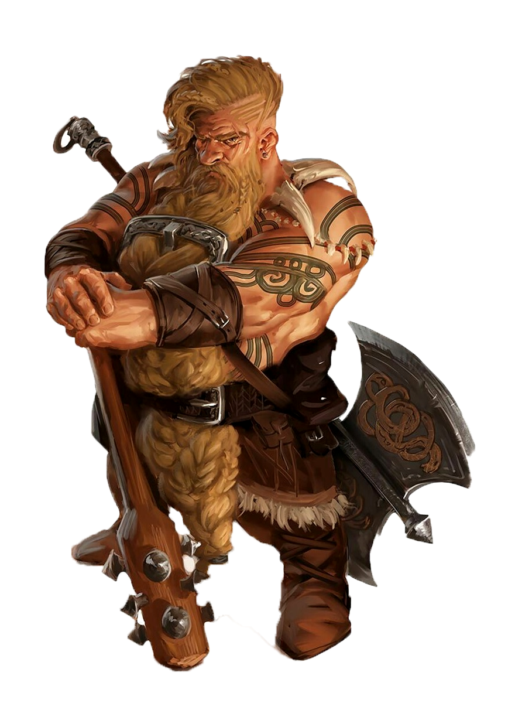

Dwarf Guide

SHORT AND STOUT
Bold and hardy, dwarves are known as
skilled warriors, miners, and workers
of stone and metal. Though they stand
well under 5 feel tall, dwarves are so
broad and compact that they can weigh
as much as a human standing nearly two
feet taller. Their courage and endurance
are also easily a match for any of
the larger folk.
Dwarven skin ranges from deep brown to a paler
hue linged with red, but the most common shades are
light brown or deep tan, like certain tones of earth.
Their hair, worn long but in simple styles, is usually
black, gray, or brown, though paler dwarves often have
red hair. Male dwarves value their beards highly and
groom them carefully.
Dwarf Traits
Your dwarf character has an assortment of inborn Abilities, part and parcel of dwarven nature.
Ability Score Increase: Your Constitution score increases by 2.
Making Hill Dwarfs a good choice for Clerics and
making Mountain Dwarfs a good choice for fighters
or barbarians.
Age: Dwarves mature at the same rate as humans, but they’re considered young until they reach the age of 50. On average, they live about 350 years.
Alignment: Most dwarves are lawful, believing firmly in the benefits of a well-ordered society. They tend toward good as well, with a strong
sense of Fair Play and a belief that everyone deserves to share in the benefits of a just order.
Size: Dwarves stand between 4 and 5 feet tall and average about 150 pounds. Your size is Medium.
Speed: Your base walking speed is 25 feet. Your speed is not reduced by wearing Heavy Armor.
Darkvision: Accustomed to life underground, you have superior vision in dark and dim Conditions. You can see in dim light within 60 feet of you as
if it were bright light, and in Darkness as if it were dim light. You can’t discern color in Darkness, only shades of gray.
Dwarven Resilience: You have advantage on saving throws against poison, and you have Resistance against poison damage.
Dwarven Combat Training: You have proficiency with the Battleaxe, Handaxe, Light Hammer, and Warhammer.
Tool Proficiency: You gain proficiency with the artisan’s tools of your choice: smith’s tools, brewer’s supplies, or mason’s tools.
Stonecunning: Whenever you make an Intelligence (History) check related to the origin of stonework, you are considered proficient in the History skill and
add double your proficiency bonus to the check, instead of your normal proficiency bonus.
Languages: You can speak, read, and write Common and Dwarvish. Dwarvish is full of hard consonants and guttural sounds, and those characteristics
spill over into whatever other Language a dwarf might speak.